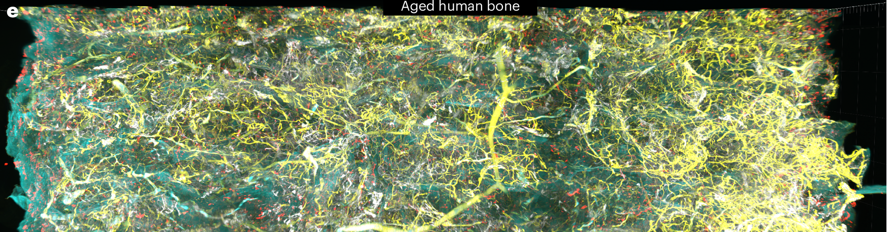
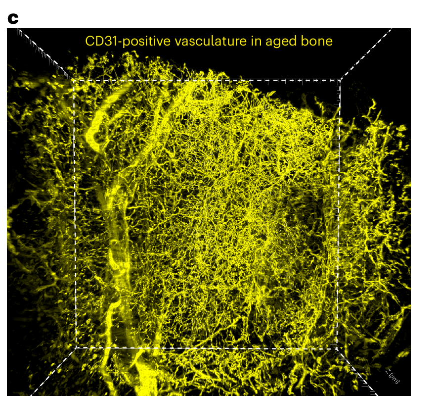

We develop and apply spatial multi-omics and 3D imaging technologies to decode the cellular architecture of the skeleton — from growth to ageing to disease.
Optical clearing of intact human bone · Nat Biomed Eng 2026
We developed a tissue-clearing and lightsheet pipeline that renders intact human bone biopsies optically transparent — preserving native 3D architecture while enabling deep imaging of proteins and mRNAs. The result is the first quantitative 3D atlas of the human osteovascular niche.


Researcher in Skeletal Biology · Spatial Genomics · 3D Imaging
Gothenburg, Sweden
My research sits at the intersection of skeletal biology and emerging technology. I use spatial transcriptomics, single-cell proteomics, and 3D computational imaging to map the molecular and cellular architecture of bone — how it develops under hormonal control, how stem cell niches are organised, and how that architecture fails in disease. This site presents my independent research vision and the direction I am building toward as a future principal investigator.
Recent work in Science Translational Medicine (2026) built the first transcriptional atlas of the pubertal human growth plate, uncovering two stem cell populations and direct GH action. In parallel, work in Nature Biomedical Engineering (2026) applied 3D tissue clearing to quantitatively compare the osteovascular niche in aged versus young human bone.
I am also developing open-source computational tools — including interactive 3D web viewers and network-level single-cell analysis pipelines — to make high-dimensional bone biology data accessible and interpretable.
We are a spatial and computational biology lab focused on the skeleton. Our work spans technique development, mechanistic biology, and translational disease applications.
We apply MERFISH and spatial transcriptomics to map gene expression in intact skeletal tissue, revealing the cell-type niches, signalling gradients, and hormonal response programmes that govern bone homeostasis and growth.
Using lightsheet microscopy and microCT combined with tissue-clearing protocols, we reconstruct bone vasculature, stem cell niches, and cellular organisation from subcellular to whole-organ scale — and build interactive web-based 3D viewers to share them.
We develop and apply single-cell network analysis tools (hdWGCNA, DeepCell surfactome pipeline), cell-cell communication inference (CellChat, SCENIC), and machine-learning-based segmentation to make sense of multi-modal skeletal datasets.
From the growth hormone axis in puberty to osteovascular ageing and osteoporosis, we investigate the druggable molecular mechanisms that determine how bone grows, how it is maintained, and how it breaks down — with an eye toward therapeutic applications.
A transcriptional atlas of the pubertal human growth plate reveals two populations of stem cells and direct effect of growth hormone
doi:10.1126/scitranslmed.adw3590Three-dimensional quantitative tissue clearing reveals differences in osteovascular niche of aged and young human mesenchymal stromal cells
doi:10.1038/s41551-026-01645-3Growth hormone regulates the stem cell population in the growth plate
doi:10.1073/pnas.2512316122MMP14 cleaves PTH1R in the chondrocyte-derived osteoblast lineage, curbing signalling intensity for proper bone anabolism
doi:10.7554/eLife.82142Identification of ephrin-A1–EphA2 signalling as a potential target for fracture prevention
doi:10.1038/s41467-026-69863-6Specialized post-arterial capillaries facilitate adult bone remodelling
doi:10.1038/s41556-024-01545-1Stimulation of skeletal stem cells in the growth plate promotes linear bone growth
doi:10.1172/jci.insight.165226The origin and fate of chondrocytes: cell plasticity in physiological setting
doi:10.1007/s11914-023-00827-1Grants and fellowships supporting the lab's research vision.
Awarded research grant supporting work on skeletal biology and 3D imaging of bone.
We combine wet-lab imaging with computational analysis to produce fully integrated, multi-modal datasets of the skeleton.
Principal Investigator
Skeletal Biology · Spatial Genomics
AI Research Assistant
Claude Sonnet · In silico
Admin · Emails · Web Search · Mouse Husbandry
AI Research Assistant
Claude Opus · In silico
Deep Reasoning · Bioinformatics · Strategic Planning
We are building a team. If you are excited about spatial biology, 3D imaging, or computational approaches to skeletal research, we want to hear from you — postdocs, PhD students, and rotation students welcome.
Supplementary videos from Nature Biomedical Engineering (2026) — direct visualisation of the human osteovascular niche.
Video 1 · Optical clearing of human bone
The clearing pipeline rendering intact human bone biopsy transparent for deep 3D imaging.
Video 2 · SOST⁺ cells and bone matrix
3D distribution of SOST-expressing cells against autofluorescent bone matrix architecture.
Video 3 · Dividing CAR cells in 3D
Spatial characterisation of dividing CAR cells with segmented vasculature and bone surfaces.
Video 4 · BM-MSCs in young human bone
Spatial arrangement of BM-MSCs, capillaries and adipocytes in young human bone.
Gothenburg, Sweden
We are looking for motivated researchers interested in spatial genomics, computational biology, or advanced imaging applied to skeletal biology. Please send a brief introduction, your CV, and what specifically interests you in our work. Strong candidates will be considered for PhD, postdoc, and visiting researcher positions.